Java集合
复习一下Java的集合：分为单列集合和双列集合，单列集合有List和Set两类，双列集合是Map集合。List接口的实现类有ArrayList, LinkedList；Set和Map可以配合着学，主要有HashSet–HashMap, LinkedHashSet–LinkedHashMap, TreeSet–TreeMap三组。
Collection集合
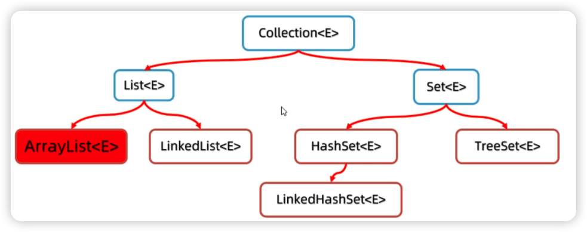总结一下Collection单列集合的常用功能有哪些，ArrayList、LinkedList、HashSet、LinkedHashSet、TreeSet集合都可以调用下面的方法：
Collection集合的遍历方式：
迭代器遍历集合
- 当调用
iterator()方法获取迭代器时，当前指向第一个元素； hasNext()方法则判断这个位置是否有元素，如果有则返回true，进入循环；- 调用
next()方法获取元素，并将当月元素指向下一个位置； - 等下次循环时，则获取下一个元素，依此类推。
1
2
3
4
5Iterator<String> it = list.iterator();
while(it.hasNext()){
String context = it.next();
System.out.println(context);
}- 当调用
增强for遍历集合
1
2
3for(String context: list){
System.out.println(context);
}forEach遍历集合1
2
3
4
5
6
7
8list.forEach(new Consumer<String>() {
public void accept(String s) {
System.out.println(s);
}
});
/* ======Lambda表达式简化======= */
list.forEach(s -> System.out.println(s));
当往集合中存对象时，实际上存储的是对象的地址值：
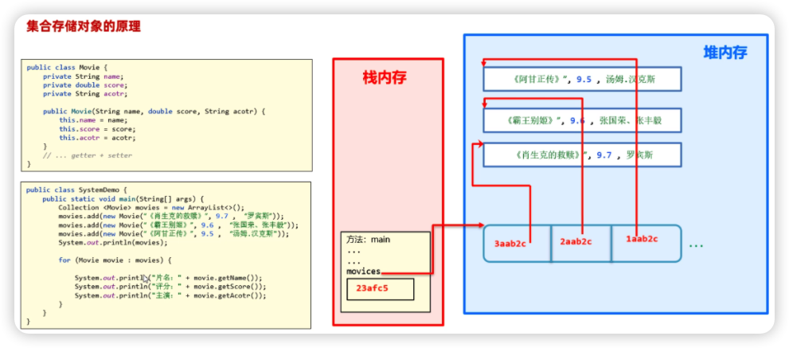
List集合
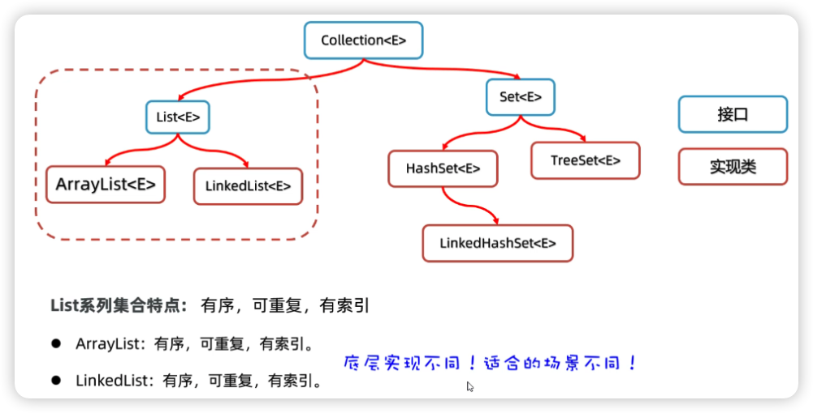List集合的常用方法：
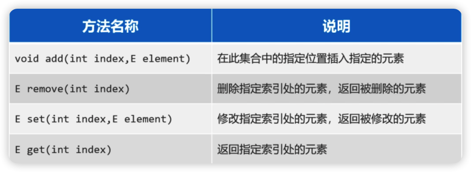因为List集合有索引，所以可以通过普通for循环的方式遍历List集合。
Arraylist集合
ArrayList集合底层是基于数组结构实现的，也就是说当你往集合容器中存储元素时，底层本质上是往数组中存储元素。 特点如下：
我们知道数组的长度是固定的，但是集合的长度是可变的，这是怎么做到的呢？
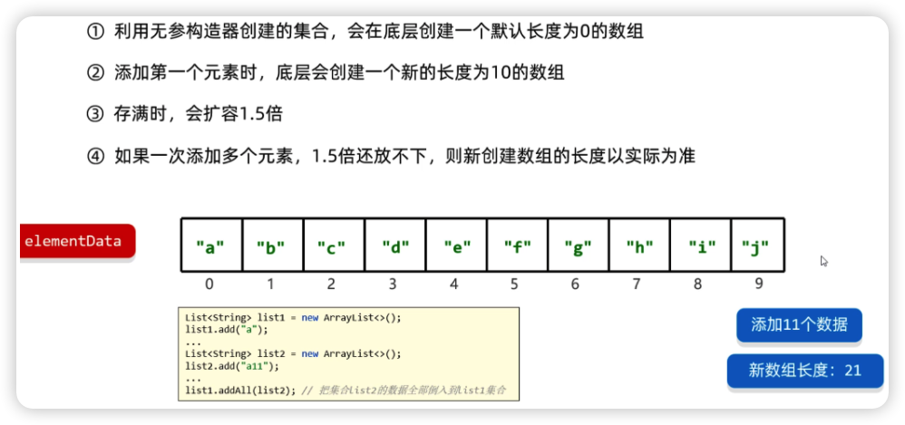数组扩容，并不是在原数组上扩容（原数组是不可以扩容的），底层是创建一个新数组，然后把原数组中的元素全部复制到新数组中去。
LinkedList
LinkedList底层是双向链表结构。
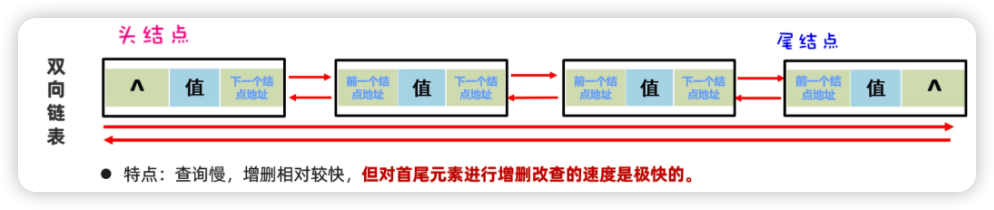
所以相对于ArrayList新增了一些可以针对头尾进行操作的方法，如下图示所示：
由于双向链表的结构，可以用它来设计栈、队列：
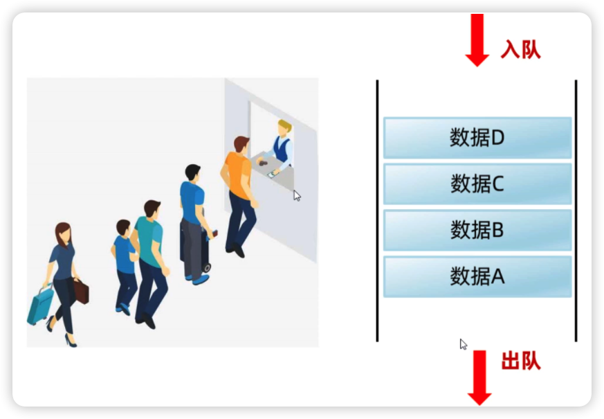 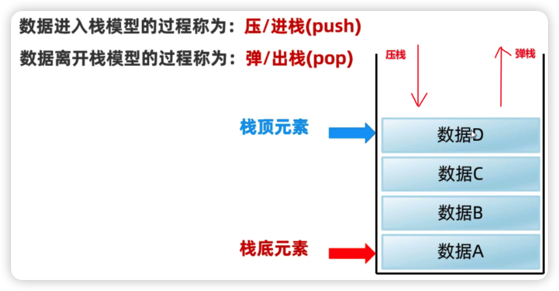Set集合
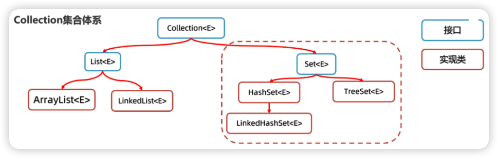HashSet集合
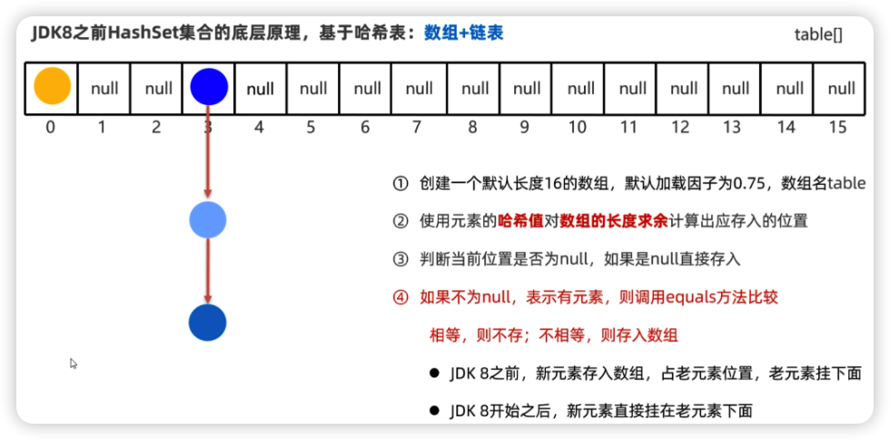 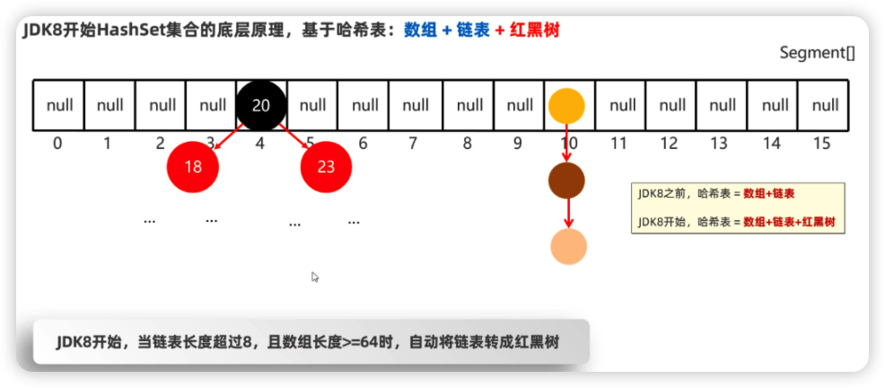HashSet去重原理
前面我们学习了HashSet存储元素的原理，依赖于两个方法：一个是hashCode方法用来确定在底层数组中存储的位置，另一个是用equals方法判断新添加的元素是否和集合中已有的元素相同。
要想保证在HashSet集合中没有重复元素，我们需要重写对象类的hashCode和equals方法。比如以下面的User类为例，假设把User类的对象作为HashSet集合的元素：
1 | HashSet<User> hs = new HashSet<>(); |
我们发现结果和我们想象的不一样，HashSet不是可以去重吗？实际上，通常两个不同对象的HashCode值是不同的，导致元素挂在了不同的数组位置上。要解决这个问题要重写对象类的hashCode和equals方法——直接generate自动生成：
1 |
|
LinkedHashSet集合
LinkedHashSet类是HashSet的子类。LinkedHashSet它底层采用的是也是哈希表结构，只不过额外新增了一个双向链表来维护元素的存取顺序。
特点：相比HashSet，它记录了元素存入的顺序。
TreeSet集合
TreeSet集合的特点是可以对元素进行排序（底层是红黑树实现的），但是必须指定元素的排序规则。如果往集合中存储String类型的元素，或者Integer类型的元素，它们本身就具备排序规则，所以直接就可以排序。如果往TreeSet集合中存储自定义类型的元素，比如说User类型，则需要我们自己指定排序规则，否则会出现异常，原因是TreeSet不知道按照什么条件对自定义对象来排序：
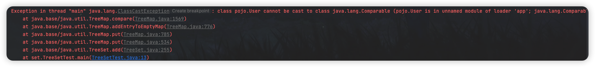
我们想要告诉TreeSet集合按照指定的规则排序，有两种办法：
第一种：在创建TreeSet集合时，通过构造方法传递Compartor比较器对象；
第二种：让元素的类实现Comparable接口，重写compareTo方法；
第一种：创建集合时传递比较器对象
o1-o2是升序排序，o2-o1是降序排序。Double类型用
Double.compare(d1, d2)比较，String类型用s1.compareTo(s2)方法比较。1
2
3
4
5
6TreeSet<User> ts = new TreeSet<>(new Comparator<User>() {
public int compare(User o1, User o2) {
return o1.getUsername().compareTo(o2.getUsername());
}
});第二种：实体类实现
Comparable接口，重写compareTo方法this：表示将要添加进去的Student对象；o: 表示集合中已有的Student对象。1
2
3
4
5
6
7
8
9public class User implements Comparable<User>{
private String username;
private String password;
/* ...... */
public int compareTo(User o) {
return this.username.compareTo(o.username); // 升序
}
}
自然排序Comparable是类在创建的时候就规定了类的比较的特性，而比较器Comparator是在具体的应用过程中我们根据需求创建一个工具类来完成比较，相比之下比较器的使用更加灵活（有的时候需要对同一对象进行多种不同方式的排序；或者按照特定的需求比较字符串但无法重写String类中的compareTo方法），不会改变这个类本身，降低了耦合度。
Collection集合总结
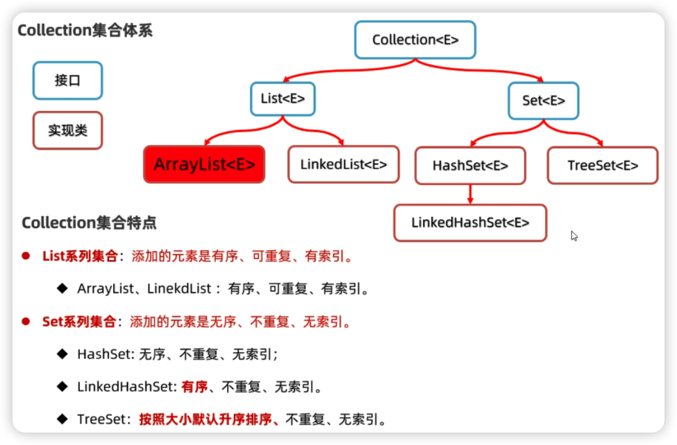并发修改异常
在使用迭代器遍历集合时，可能存在并发修改异常：
1 | List<String> list = new ArrayList<>(); |
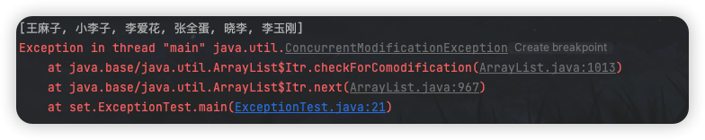
这是因为迭代器遍历机制，规定迭代器遍历集合的同时，不允许集合自己去增删元素。
增强for循环遍历方式，是在内部调用迭代器进行遍历，所以也会出现并发修改异常：
1 | for(String name: list){ |
简单for循环遍历方式，不会出发迭代器的并发修改异常，但会造成结果出错：
1 | for(int i=0;i<list.size();i++){ |
[王麻子, 小李子, 李爱花, 张全蛋, 晓李, 李玉刚]，以上述list集合为例，当i=1时remove了“小李子”元素，这时候i=1的元素变成了“李爱花”，而循环执行了i++，该元素就被跳过去了。解决方案是：
1 | for(int i=0;i<list.size();i++){ |
而迭代器遍历解决并发修改异常的方法是，使用迭代器的修改元素方法：
1 | Iterator<String> it = list.iterator(); |
Collections工具类
可变参数
可变参数是一种特殊的形式参数，定义在方法、构造器的形参列表处，它可以让方法接收多个同类型的实际参数。
可变参数在方法内部，本质上是一个数组。
1 | public static void main(String[] args) { |
- 一个形参列表中，只能有一个可变参数；否则会报错。
- 形参列表中如果多个参数，可变参数需要写在最后；否则会报错。
Collections工具类
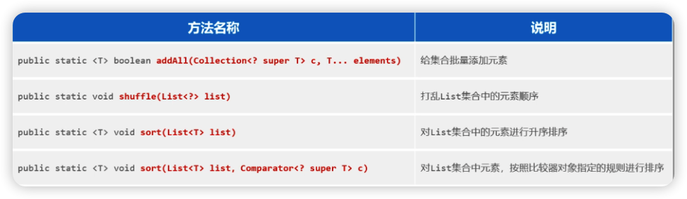
往集合中存储的元素要么是Stirng类型，要么是Integer类型，他们本来就有一种自然顺序所以可以直接排序。但是如果我们往List集合中存储实体类对象，这个时候想要对List集合进行排序自定义比较规则的。
1 | Collections.sort(list, new Comparator<User>() { |
Map集合
双列集合，就是说集合中的元素是一对一对的。Map集合中的每一个元素是以key=value的形式存在的，一个key=value就称之为一个键值对，而且在 Java 中有一个类叫Entry类，Entry的对象用来表示键值对对象。
Map集合有如下的特点：键不能重复，值可以重复，每一个键只能找到自己对应的值。
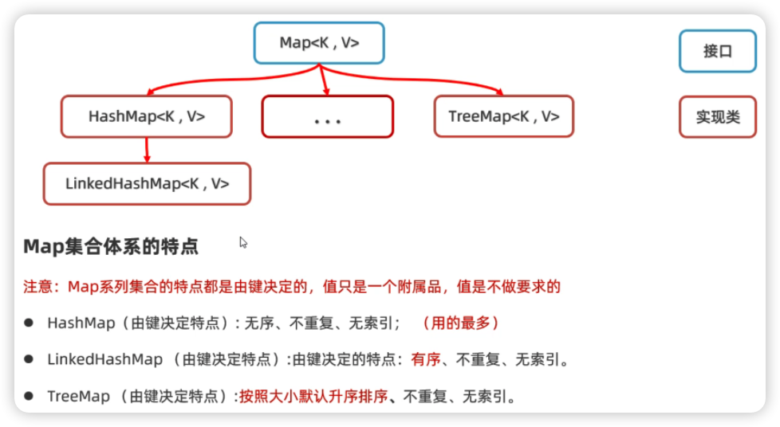Map集合常用方法
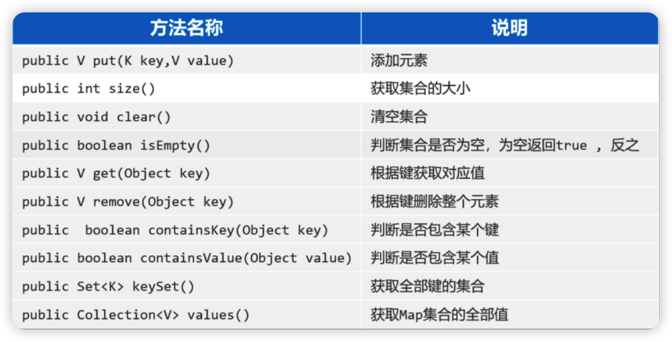Map集合遍历方法
方式一
1
2
3
4
5
6
7
8
9
10
11
12Map<String, Double> map = new HashMap<>();
map.put("蜘蛛精", 162.5);
map.put("蜘蛛精", 169.8);
map.put("紫霞", 165.8);
map.put("至尊宝", 169.5);
map.put("牛魔王", 183.6);
Set<String> keys = map.keySet();
for(String key: keys){
Double value = map.get(key);
System.out.println(key + "--->" + value);
}方式二
Map集合是用来存储键值对的，而每一个键值对实际上是一个
Entry对象。可以直接获取每一个Entry对象，把Entry存储扫Set集合中去，再通过Entry对象获取键和值。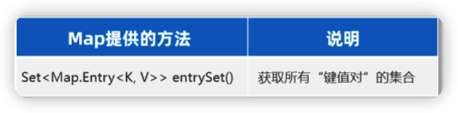
Map集合提供
entrySet方法，把Map集合转换成键值对类型的Set集合：1
2
3
4
5
6Set<Map.Entry<String, Double>> entries = map.entrySet();
for (Map.Entry<String, Double> entry: entries){
String key = entry.getKey();
Double value = entry.getValue();
System.out.println(key + "--->" + value);
}方式三
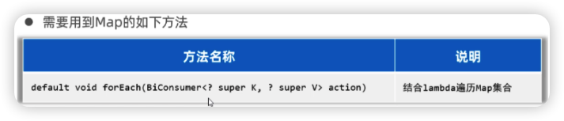
1 | map.forEach(new BiConsumer<String, Double>() { |
HashMap
HashMap集合的特点是由键决定的： 它的键是无序、不能重复，而且没有索引的。在各种Map集合中也是用得最多的一种集合。
HashMap底层原理和HashSet是一样的。因为我们往HashSet集合中添加元素时，实际上是把元素作为key添加到了HashMap集合中。
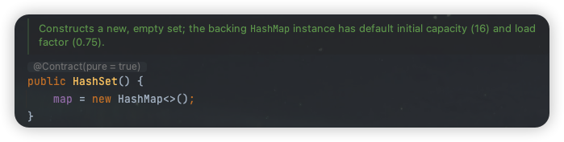
HashMap和HashSet是一样的，底层是哈希表结构，哈希表是一种增删改查性能相对都较好的数据结构。
往HashMap集合中键值对数据时，底层步骤如下：
- 第1步：当你第一次往
HashMap集合中存储键值对时，底层会创建一个长度为16的数组； - 第2步：把键然后将键和值封装成一个对象，叫做
Entry对象； - 第3步：再根据
Entry对象的键计算hashCode值（和值无关）； - 第4步：利用
hashCode值和数组的长度做一个类似求余数的算法，会得到一个索引位置； - 第5步：判断这个索引的位置是否为
null：如果为null，就直接将这个Entry对象存储到这个索引位置；如果不为null，则还需要进行第6步的判断； - 第6步：继续调用equals方法判断两个对象键是否相同：如果
equals返回false，则以链表的形式往下挂；如果equals方法true，则认为键重复，此时新的键值对会替换就的键值对。
- 第1步：当你第一次往
HashMap底层需要注意这几点：
- 底层数组默认长度为16，如果数组中有超过12个位置已经存储了元素，则会对数组进行扩容2倍。数组扩容的加载因子是 0.75 ，意思是：
16*0.75=12； - 数组的同一个索引位置有多个元素、并且在8个元素以内（包括8），则以链表的形式存储（JDK8以后版本链表采用尾插法）。
- 数组的同一个索引位置有多个元素、并且超过了8个，则以红黑树形式存储。
- 底层数组默认长度为16，如果数组中有超过12个位置已经存储了元素，则会对数组进行扩容2倍。数组扩容的加载因子是 0.75 ，意思是：
决定键是否重复与两个方法有关，一个是
hashCode方法、一个是equals方法。有两个键计算得到的hashCode值相同，并且两个键使用equals比较为true，就认为键重复。所以，往Map集合中存储自定义对象作为键，为了保证键的唯一性，我们应该重写这两个方法。
LinkedHashMap
LinkedHashMap集合的特点也是由键决定的：有序的、不重复、无索引。这里的“有序”是只存入的顺序。LinkedHashMap的底层原理，和LinkedHashSet底层原理是一样的，底层多个一个双向链表来维护键的存储顺序。
TreeMap
TreeMap集合的特点也是由键决定的，默认按照键的升序排列，键不重复，也是无索引的。TreeMap集合的底层原理和TreeSet也是一样的，底层都是红黑树实现的，所以可以对键进行排序。